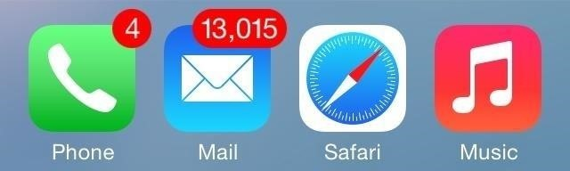

Importance of Inbox Zero
Imagine your mailbox — your physical mailbox decorated with your family name and some artwork demonstrating your love for nature, the beach or whatever is appropriate to display on an envelope-collecting box. You walk up to the front stoop, find some mail in the mailbox from the day before without thinking much of it, inhale the fumes of the freshly cut grass, wave to the neighbors, pet the neighborhood dog as your friendly neighbor walks them on your sidewalk, and eventually see the mailman coming. In a panic, you want to empty your mailbox so the mailman doesn’t judge you for having your mail in there from the previous day. You find bills, tasks you have to take action on, save the dates for weddings you have to take note of, and even insurance information you have to tell the spouse about!
You’re doomed. The mailman makes his way over to your messy, unorganized mailbox where he drops more mail on top of the unallocated mail you currently have that has been piling up for days, weeks, maybe even years. You're overwhelmed and decide it’s not even worth organizing; you find contentment in your mess to the point where you revel in the piles of clutter and perhaps create some organized system on top of it.
Neighbors look over to your mailbox (Mail app badge count1) and cringe. You wonder why you even enjoy keeping everything in your email; there are other management programs that will allow you to hoard this type of data. Email, however, is the one trusted system we all have in common. Email is such a standard we know we’ll always refer back to it in the future - so, if I need that coupon from six months ago, I can usually scroll past 100 unread emails until I find it nestled in my inbox.
Ultimately, you want to maintain an empty inbox at all times. Clear out, allocate, store, defer, and delegate things immediately so you have constant clarity. An initial purge of everything unneeded is necessary and it will hurt at first — the trick, however, is not minding that it hurts.
What is Email
Email is something different to all of us. Some keep their email as their todo list. They’ll favorite the emails they want to "cross off" today and keep the emails they need to get "done" this week unread.
Some hate email and only use it when they have to while they get more and more excited about "email killers" like Slack. These people’s inboxes are usually filled with conversations they know they’ll have to reference later - which brings us to our next type of emailer: The Referencer.
Some love using their email as their primary reference storage and personal wiki.
What was the confirmation number for the tickets the box office asking for?
What’s my license plate number? I know the insurance company put it in an email somewhere.
Living like this isn’t terrible, but I can’t imagine it not being exhausting. Relying on a tool that isn’t meant for something for things that are as important as your information and daily planner is begging for disaster. It also prevents you from adhering to the popular Inbox Zero Methodology.
What is Inbox Zero?
In short, Inbox Zero is a practical workflow to constantly adhere to while in your email that allows very few (to zero) emails in your inbox at all times.
Conforming to Inbox Zero means that any time you open your email client you’ll see fresh emails that you have to do something with right away. Whether you’re archiving it on the spot (perhaps you’re subscribed to a newsletter you want to unsubscribe from) replying on the spot, taking note of it a separate entity (your note-taking app or physical journal), or marking in your todo list. All of these outcomes allow you to take the important pieces of the email and archive it to get it out of there.
Common Email Mistakes
What is the process your mind takes you through when you get an email notification?
Here’s a non-exhaustive list of some options:
- Interesting! Let me read this and forget about it one minute later!
- I have to read this now and then perform some action based on what it says!
- Boring, I’ll open it so the little blue “unread” dot disappears and I can stop worrying about it but have it stay in my inbox.
- Boring, I’ll archive it right now.
If you chose:
Interesting, let me read this and forget about it one minute later!:
Consider what is going through your mind. Are you looking for the instant gratification that this email’s content might give you? Is it urgent enough that you have to open it, read it, and delete it right away? Can it be triaged for later use so you know exactly what to do with it and you control the email instead of the email controlling you?
I have to read this now and then perform some action based on what it says!:
Again. The email is controlling you. You’re going to let some measly text on a virtual letter tell you how to live your life? Sure, sometimes it’s the right thing to do, but more often than not, you’re just looking for an excuse to get something done and wait for the permission of an action item to do it.
This says something about your workflow. What were you doing when you got this email that you’re so easily manipulated into taking action on it right away? Maybe you were doing something less productive so by doing whatever this email says you’ll feel more useful. You should always be feeling productive. Do not let your email be your todo list.
Boring, I’ll just open it so the little dot goes away:
Scanning email based on what is read and unread is probably not the best way to manage what is important, unimportant, and what has to be read and ignored. Firstly, it’s not a concrete relationship. You can so easily mark something as read without realizing it and have something fall through the cracks. By taking action on each and every email that comes through, you’ll know exactly where everything is.
Boring, I’ll archive it now:
This is actually OK.
Inbox Zero Workflow
Alright. You want to overhaul your email habits, always have a clean slate, and control your email instead of your email controlling you. How do you do it?
You open your email client and notice three brand new emails. In no particular order, you open one up. It can say so many things - truly, email is a fresh gift with a bow tied on top of it every time.
Scenario A
The first email is from your newest client asking if you can send over some samples of your latest project. What do you do with this?
The old you:
Before becoming enlightened with the Inbox Zero methodology, you may have read this email, decided you have to take action on it later and just left the email in your inbox. Maybe you even marked it as unread so the little blue dot next to it reminds you to look at it again later.
The new you:
Since adhering to the Inbox Zero methodology, you now understand that you must do something with this email right now. Archive it, delete it, forward it, snooze it, get it out of the inbox! In this case, you add "Send client samples" to your trusted to-do list and archive the email. Maybe you’ll even copy the reference link to the email and paste it along with your "Send sample" todo item.
Scenario B
The next email is from your dear friend who sent over the ticket confirmation and info regarding the musical you’re going to see next month. This is tricky because there are a few acceptable methods here.
Snoozing:
We’re looking at reference material here. We know we’re going to need this information when we make it to the theatre and we’ll need to take note of this date right away. Go ahead and mark the event in your calendar so you prevent double-booking and snooze the email to the day of the event.
Now, you’ll get the email in your inbox just as if it were sent that day. You’re able to reference it immediately and archive it once the show is through.
Reference:
The safer, but slightly more convoluted, method here is to properly reference the information in your trusted system. This can be your note-taking application, the physical journal you know you’re going to check back with every day, or an actual file in a folder you keep in the cabinet under your desk. The main idea here is that it’s somewhere you know you’ll be able to find it.
Keeping up with it
We get it — email is hard, infinite, and sometimes just naturally a messy and unorganized place no matter how often you try keeping it in order. The big thing to keep in mind is how your inbox is just a place for your life’s information just until you read it for the first time and decide what to do it with immediately after. Adhering to the simple ideas of just clearing out your emails and inserting all the information in your other entities that are meant for them will clear your mind and make you infinitely more productive and responsive.
-  The dreaded iOS badge count. Just disable it at that point. ↩︎